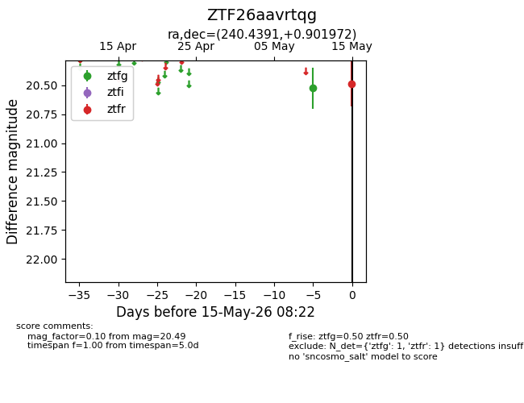
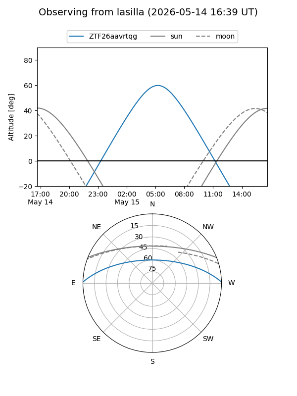
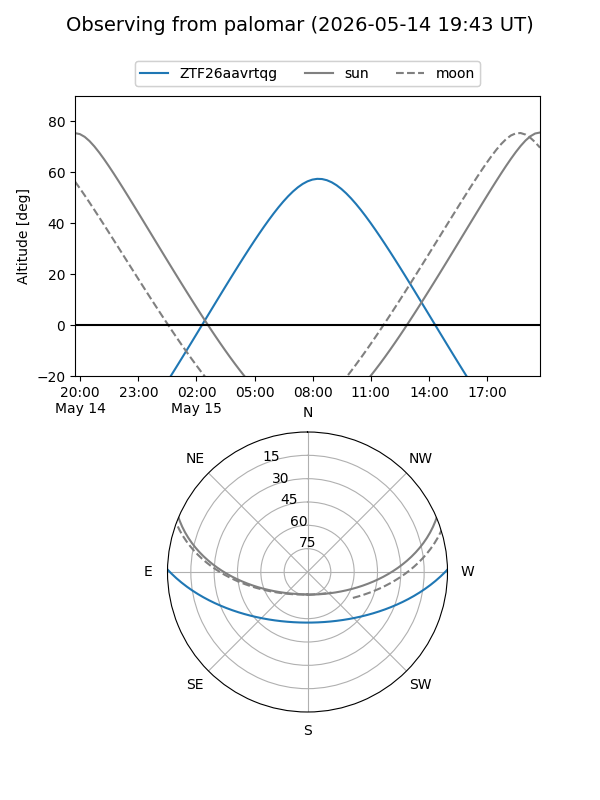
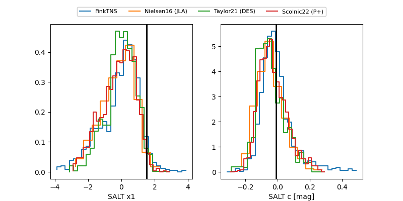

ZTF26aavrtqg
Target ZTF26aavrtqg at 2026-05-15 08:24
Aliases and brokers:
FINK: link
Lasair: link
ALeRCE: link
alt names
ZTF26aavrtqg (ztf,fink_ztf)
Coordinates:
equatorial (ra, dec) = 240.4391,+0.90197
equatorial (HMS+DMS) = 16:01:45.38,+00:54:07.10
galactic (l, b) = (11.2448,+37.40596)
Flags:
Photometry:
last ztfg=20.53, ztfr=20.49
1 ztfg, 1 ztfr detections
Lightcurve

Visibility


Additional plots
